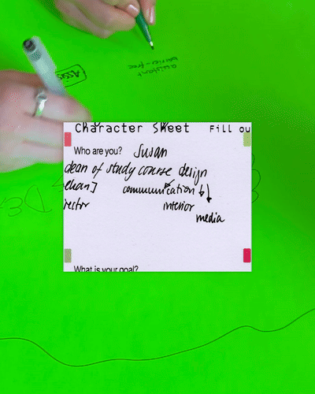
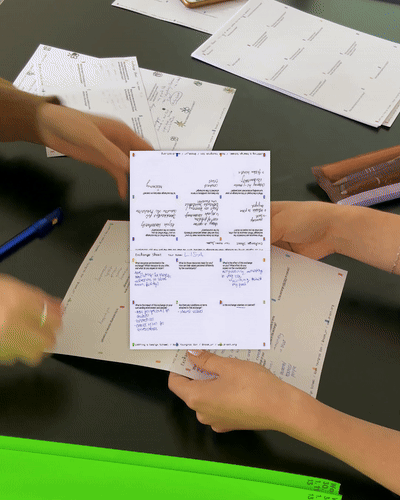
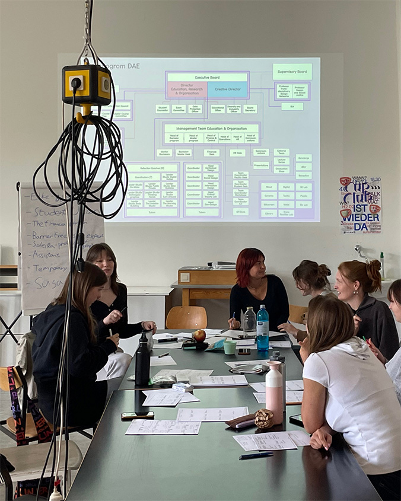

LARPing (institutions, technologies...)
The cases of the AI system LARP and the Design School LARP
The workshop, inspired by Live Action Role Play (LARP), was initially developed in response to an invitation from ALLAPOPP for their event, supported by LAS Art Foundation, as an embodied and facilitated method to explore the potentiality of a decolonial AI system. The format was later adapted to foster collective speculation on various other technologies and institutions, such as design schools.
The workshop at Mainz University of Applied Sciences
An AI system, often anthropomorphized, is in fact far from a singular entity but rather an institution composed of various workers, infrastructures, fundings, etc. Like any institution, AI is also (partly) made up of people. Andrea Fraser writes in her 2005 essay, "It's not a question of being against the institution: We are the institution.1 It's a question of what kind of institution we are... because the institution of art is internalised, embodied, and performed by individuals, these are the questions that institutional critique demands we ask, above all, of ourselves."2 If so, we—the participants of the program—are accountable for the question of what AI we want to become.
In this session, the participants were introduced to the concept of slow computing3, LARP4, diagrammatic thinking and speculative design.
LARP sheets designed for the workshop
Slowing down the perception of algorithmic processes is crucial to considerately facilitate collective attention during the workshop. Each participant, representing an element of an AI system, operated at a mediated pace with agency. The collectively negotiated notion of an AI system emerged through the participants’ interactions around the table, exchanging data, capital, labor and many other forces, akin to that of a live action role-play game.5 These interactions were facilitated using various printed props including character sheets and data sheets.

The diagram produced during the workshop at Mainz University of Applied Sciences
The AI, in this case, is a diagram, an abstract machine, "the map of relations between forces," “the dynamic, fluctuating process occurring between static structures.”6 Without relying on schematized representation, the diagram was what the participants “become” through the play. Starting from the distribution of character sheets, the participants actively embodied the roles that represent their desires and necessities, and explored “the areas of the Venn diagram where they do overlap.”7 Consequently, the function of each part of the AI system emerged from the collective demands. While this approach is inspired by speculative design—the design of non-existing artifacts and systems in fictional “worlds”—the aforementioned approach opens up the design process to a facilitated collective with distributed agency, rather than giving excessive emphasis to a “heroic designer.”
Participants negotiated what kind of AI they could become. After the rounds of LARP, the participants schematized their speculation of an AI system, its functions and its algorithmic processes into a drawn diagram on a large piece of paper. The complex process that it describes resembles the aforementioned “Anatomy of an AI System” yet it will be represented in a far more decentralized and messy way.
The workshop at Mainz University of Applied Sciences
The same method was applied to the idea of design education as a technology to help the participants of design school imagine an emancipatory design education without relying on a singular, heroic storyteller. In the workshop session, BA Communication Design students at Mainz University of Applied Sciences, Communication Design Department collectively embodied, performed, and speculated on the design school they aspire to create. Each participant autonomously acted out their role and interacted with others to bring to life the school they envisioned. By filling out character sheets, they embodied the diverse constituent elements of this school, from student union members and assistant tutors to the dean and janitor. These interdependent characters negotiated and cooperated towards the emancipation of a collectively imagined art school. The speculative organogram emerged through the participants’ interactions in the room, as they exchanged capital, information, labor, care, and many other forces mediated by the exchange sheets.
Footnotes
1 The following project demonstrates this complexity: Kate Crawford and Vladan Joler, "Anatomy of an AI System: The Amazon Echo as an anatomical map of human labor, data and planetary resources" (2018), accessed February 3, 2024, https://anatomyof.ai.
2 Andrea Fraser, "From the Critique of Institutions to an Institution of Critique," Artforum, September 2005, XLIV, No. 1, 278-283.
3 Slow computing is a strategy of resistance in the algorithmic age that “takes the form of slowing down one’s rate of participation in processes of social acceleration and temporal reconfiguration and performing intricate ‘dances’ around and within the proliferating platforms and constituent units of data grabbing infrastructures.”
4 This role-play of an infrastructure has been experimented in various other workshop programs, such as: "Walking the Watershed, 'Performing Infrastructure,'" accessed February 3, 2024, https://www.walkingthewatershed.com/workshops/performing-infrastructure/.
5 This role-play of an infrastructure has been experimented in various other workshop programs, such as: "Walking the Watershed, 'Performing Infrastructure,'" accessed February 3, 2024, https://www.walkingthewatershed.com/workshops/performing-infrastructure/.
6 Jakub Zdebik, Deleuze and the Diagram: Aesthetic Threads in Visual Organization (London: Bloomsbury Publishing, 2012).
7 Elvia Wilk, Death by Landscape, (New York, NY: Soft Skull Press, 2022).
Portfolio - Noam Youngrak Son
For a more visual overview, check my Instagram.
| Image | Title | Category | Year | Notes | Funding |
|---|
Noam Youngrak Son is a communication designer, design theorist, and cultural worker. Their design work encompasses small-scale publishing projects, speculative worldbuilding, workshops, lectures, writing, net art, and occasional performative interventions. As a cultural worker, they have co-organized the Ghent-based queer publishing collective Bebe Books since 2021. Son has expanded their focus from design to theory in order to critically engage with the ontology of the design industry, media, and broader material culture. This turn is informed by their observations of cultural assemblages that echo the extractive operations of capitalism on racialized and more-than-human populations. They are particularly attentive to the interconnected notions of speculation—both as an open artistic approach and as a process of value increase in capitalism. They research the tendency of the former in design to be subjugated by the latter and explore alternative methods for speculative design practices to realize their transindividual potential through collective organization and workshop facilitation. In this process, Son utilizes queer publishing as a technology for mobilizing attention beyond the financialized “scarce resource” of the attention economy. In this context, publishing extends beyond mere printed matter to encompass the maintenance of communities and the cultivation of interspecies relationships. The term "queer" here is not used as a statement of identity but as a process—small yet collective strategies of publishing that challenge the modern myth of the heroic designer.
Subscribe to the newsletter